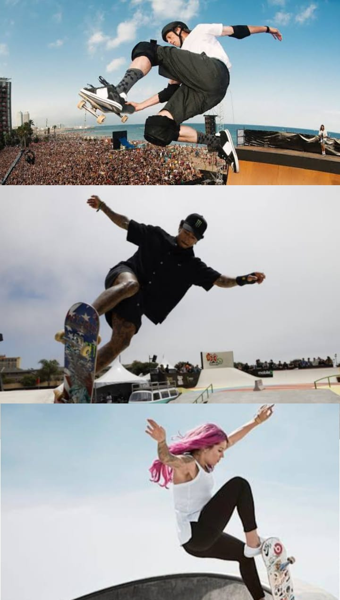

Life is so boring without a chaos right? so lets yall to make it interesting. r yall interested? so come here
Selamat datang di SkateHouse, rumahnya semua pecinta roda empat yang nggak kenal kata berhenti. Bagi sebagian orang, skateboard mungkin cuma sekadar papan dengan empat roda kecil. Tapi buat kita, ini lebih dari itu. Skateboard adalah identitas, kebebasan, dan keluarga. Di jalanan, lo belajar hal-hal yang nggak bakal diajarin di kelas: tentang jatuh, tentang bangkit, tentang konsistensi, dan tentang keberanian buat ambil resiko. Skate ngajarin lo gimana caranya tetep berdiri setelah gagal, gimana caranya percaya diri meski dihujat, dan gimana caranya ngelawan rasa takut lo sendiri. SkateHouse ada buat jadi tempat lo berkembang. Bukan cuma sekadar web, tapi markas digital buat semua skater, dari pemula yang baru bisa push pertama, sampai pro yang udah sering ikut kompetisi. Di sini, lo bakal dapet inspirasi, cerita, dan tentu aja vibes skate yang nggak ada matinya. Selamat datang di dunia skateboard! Website ini dibuat untuk para pecinta skate—baik yang baru mulai maupun yang udah jago. Jelajahi trik-trik keren, kenali skaters legendaris, dan gabung komunitas skate lokal. Skate bukan cuma olahraga, tapi gaya hidup. Let’s roll!
Read MoreRead this
Some trick for yall
Di dunia skateboard, trik adalah segalanya. Dari yang paling dasar sampai yang bikin penonton teriak “gokil!”, setiap trik punya gaya dan tantangannya sendiri. Di halaman ini, kamu bisa belajar berbagai macam trik berdasarkan level kemampuan: basic, intermediate, dan advanced. Yuk, kita mulai!
First: BasicTricks (TrikDasar)
Trik dasar adalah fondasi buat semua skater. Yang pertama adalah Ollie, trik lompat tanpa bantuan tangan yang jadi kunci banyak trik lainnya. Lalu ada Manual, yaitu teknik meluncur dengan hanya menggunakan roda belakang, butuh keseimbangan tinggi. Shuvit adalah trik memutar papan tanpa memutar badan, cocok buat pemula yang mau belajar kontrol papan. 180 adalah trik memutar badan dan papan sejauh 180 derajat saat melompat. Terakhir, Boneless adalah trik lompat dengan bantuan tangan untuk mengangkat papan, gaya klasik yang tetap keren.
Intermediate Tricks (Trik Menengah)
Kalau kamu udah lancar trik dasar, saatnya naik level! Kickflip adalah trik memutar papan secara horizontal saat lompat, sedangkan Heelflip adalah versi kebalikannya, di-flip pakai tumit. Varial Kickflip menggabungkan gerakan shuvit dan kickflip jadi satu trik keren. Fakie Ollie dilakukan dari posisi mundur, bikin trik dasar jadi lebih menantang. Sementara itu, No Comply adalah trik lompat dengan satu kaki turun dari papan, sering dipakai buat gaya kreatif dan street style.
Advanced Tricks (Trik Pro)
Ini dia trik-trik yang bikin penonton terpukau. Hardflip adalah kombinasi antara frontside shuvit dan kickflip, gerakannya cepat dan tajam. 360 Flip atau dikenal juga sebagai Tre Flip, memutar papan 360 derajat sambil melakukan kickflip. Laser Flip adalah versi heelflip yang digabung dengan 360 shuvit, cocok buat yang suka tantangan. Bigspin menggabungkan rotasi papan dan badan sekaligus, bikin trik ini terlihat dramatis. Terakhir, Hospital Flip adalah trik unik dengan gerakan patah-patah yang terlihat seperti papan “sakit tapi keren”.
Style Variations (Gaya Bermain)
Selain nama trik, gaya bermain juga penting. Nollie adalah trik lompat dari roda depan, beda dari ollie biasa. Switch berarti melakukan trik dari posisi kaki yang kebalikan dari biasanya, bikin trik jadi lebih sulit. Fakie adalah posisi mundur saat melakukan trik, sering dipakai buat variasi gaya. Sementara Revert adalah gerakan memutar badan setelah mendarat dari trik, biasanya dipakai buat transisi atau gaya tambahan.
Read More
Here
Our Coolest Skates
Skateboard bukan cuma soal trik, tapi juga soal siapa yang melakukannya. Di halaman ini, kamu bisa kenalan dengan para skaters legendaris dunia yang bikin dunia skate makin hidup.
Lets see them
Tony Hawk

Nyjah Huston

Leticia Bufoni
“Vertikal Itu Seni, Bukan Sekadar Trik”
Kalau bicara skateboard, nama Tony Hawk pasti muncul duluan. Di galeri ini, kamu bisa lihat bagaimana Tony melayang di udara, menaklukkan halfpipe dengan trik-trik yang nggak masuk akal. Trik 900 yang dia ciptakan bukan cuma soal teknik, tapi soal sejarah. Foto-foto ini menangkap momen ketika Tony terbang di atas ramp, dengan latar langit senja dan sorakan penonton. Aksi yang bikin kita sadar: “Skateboarding is not a crime. It’s freedom.” – Tony Hawk
“Street Itu Perjuangan, Bukan Sekadar Gaya.”
Kalau bicara street skateboarding, nama Nyjah Huston langsung terlintas. Di galeri ini, kamu bisa lihat bagaimana Nyjah menaklukkan rail, ledge, dan tangga dengan presisi yang nyaris mustahil. Trik-triknya seperti nollie flip backside lipslide atau fakie 360 nosegrind bukan cuma soal teknik, tapi soal mentalitas: jatuh, bangkit, ulangi. Foto-foto ini menangkap momen ketika Nyjah meluncur di tengah kota, dengan latar mural, beton retak, dan sorotan mata penonton yang terpukau. Aksi yang bikin kita sadar:“Skateboarding is all about persistence. You fall, you get up, and you try again.” – Nyjah Huston
“Skate Identitas, Not Sekedar Olahraga.”
Leticia Bufoni adalah wajah revolusi skateboard perempuan. Di galeri ini, kamu bisa lihat bagaimana Leticia meluncur di street course dengan gaya yang fierce dan penuh warna. Trik seperti kickflip boardslide atau heelflip down stairs jadi simbol keberanian dan ekspresi diri. Foto-foto ini menangkap momen ketika Leticia tersenyum di atas papan, di tengah panasnya kompetisi dan sorakan penonton. Rambut terurai, sepatu warna-warni, dan tatapan penuh percaya diri. Aksi yang bikin kita sadar: “I want girls to know they can be strong, stylish, and fearless—on and off the board.” – Leticia Bufoni

Our Top Partners
Partners
Kami bangga didukung oleh tokoh legendaris dan brand global yang telah membentuk dunia skateboarding. Kolaborasi ini memperkuat misi Skate House untuk menginspirasi generasi baru skater Indonesia.